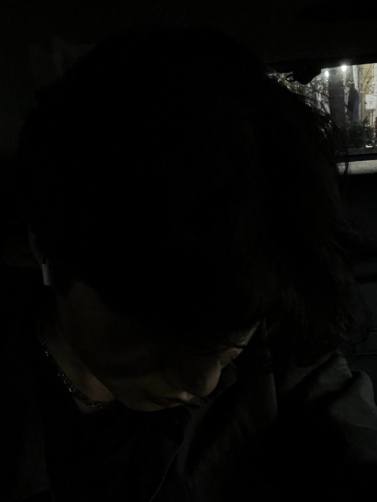
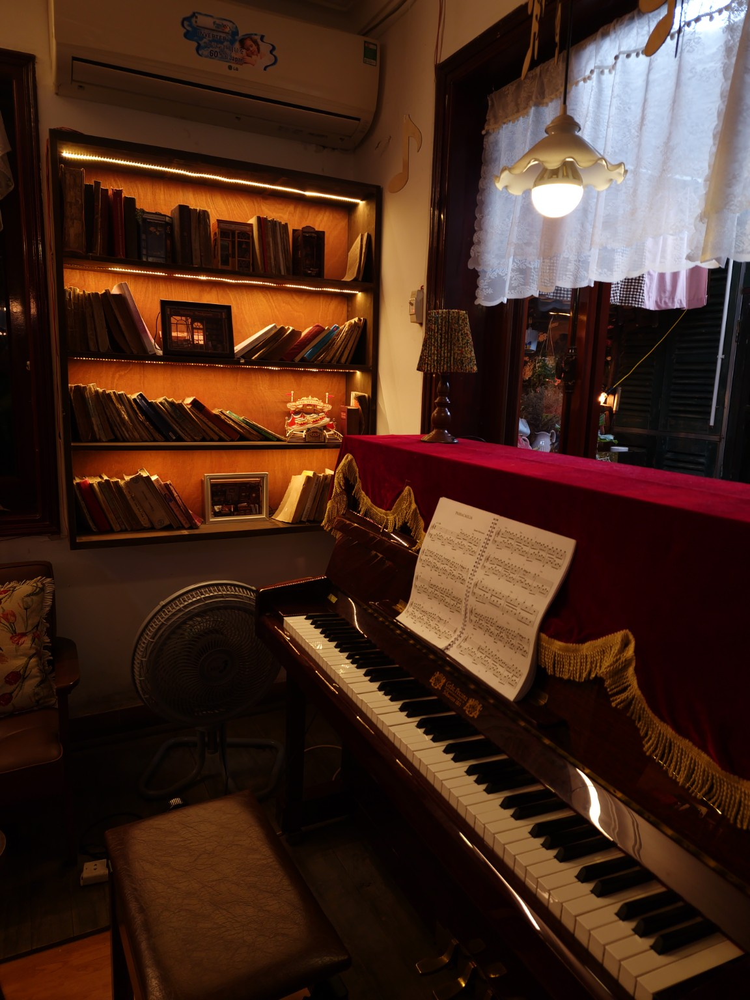

Business mindset
Learning the foundations of business, economics and management, and looking at problems from different perspectives.
Hi, I’m Việt Dũng - Daezal.
A Business Administration student at HANU, drawn to technology, music and art — and always inspired by beautiful places and the joy of travel.

Somewhere between a new idea, a favorite song and a view that makes me pause.
I love understanding how businesses work, how technology solves problems and how music connects people. I’m drawn to paintings, beautiful landscapes and the details of everyday life. Travel gives me another way to see things differently — to slow down, notice more and bring a little inspiration home.
Learning the foundations of business, economics and management, and looking at problems from different perspectives.
Exploring digital tools and ways to use technology for learning, developing ideas and solving everyday problems.
Exploring content creation and storytelling, with inspiration from music, paintings and the places I discover.
For the moments that feel better with a song playing in the background.

A little soundtrack for wandering through this page. Take a breath, press play and stay a while.
Art in everyday objects, skies in between places, and little corners with a story. A collection of moments from my world.
A wing cutting across a dusky sky, with a quiet world of clouds below.
A fading sunset, a riverside skyline and city lights reflected on the water.
A laptop dressed in swirling blues and golds, beside a cup in a warmly lit café.
A vivid illustrated phone case brings a little color to an ordinary café table.
A Shin-chan figure, postcards and a dessert menu — a playful corner worth noticing.
Patterned cups, painted plates and vintage wooden shelves turn a café corner into a collection of details.
An interesting idea, a favorite painting, a song on repeat or a place worth visiting — I’d love to hear about it.
Instagram · @imnotdaezal ↗